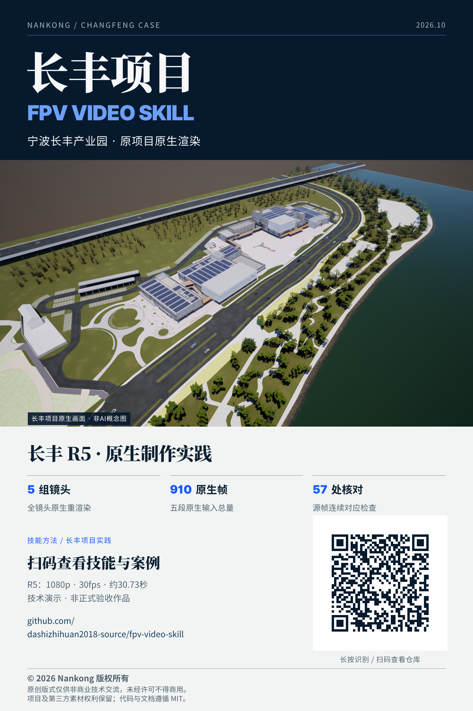

$digital-twin
读取总技能 ↗数字孪生全链路
从项目定位、模型准备到交互体验与成果发布，串联创作环节，让模型、网页、影片和海报形成完整表达。
从模型到体验 · 从创意到交付
从轻量化模型到空间交互，从产品发布片到穿越镜头。将长丰产业园的项目经验，转化为面向建筑与园区的数字孪生创作能力。
模型 · 交互 · 影片 · 海报 · 官网，一套工作流贯通。

长丰产业园 · 数字孪生实践
宁波长丰产业园
数字孪生交付案例
从园区全景走向单栋建筑，将空间、设备与能源关系放进同一个可交互场景。聚焦、剖切、漫游与视觉演示，让复杂信息更直观，让项目表达更有层次。
进入长丰数字孪生 ↗项目演示采用模拟数据。
技能库 / 独立可用
覆盖数字孪生创作的关键环节。
独立调用，也能协同完成整套交付。
从项目定位、模型准备到交互体验与成果发布，串联创作环节，让模型、网页、影片和海报形成完整表达。
MODEL / GLB
让建筑模型更适合网页展示。在优化体积与加载体验的同时，保留近景材质、建筑识别和设备交互。
适用于建筑、园区和设备模型。包含模型盘点、语义映射、压缩策略与近景对照，并附GLB结构检查工具。
使用 $twin-model-lightweight
盘点当前模型，提出可逆优化方案。
保留近景、材质和建筑/设备选择。PRODUCT / STORY
把功能变成故事。用真实产品画面、清晰的镜头组织与贴合旁白的节奏，讲明白亮点，留下记忆点。
从脚本、分镜和取景开始，组织功能演示、旁白与字幕；附时序检查工具，帮助安排关键画面的出现时机。
使用 $twin-product-film
制作真实操作发布片，锁定镜头、
台词词点、帧时钟和原生像素。FPV / CAMERA
用连贯视角探索建筑与场地。围绕航线、视线和速度设计镜头，让接近、穿越与揭示成为有节奏的空间体验。
覆盖航线规划、前视与转向、速度设计、净空检查和帧序列录制，并附路径包围盒粗筛工具。
使用 $twin-fpv-film
规划连续航线，先验证净空、
相机运动与全局帧时序，再录制。EFFECTS / RESET
让空间信息动起来。扫描、能流、聚焦、分层与剖切，在同一个场景中切换呈现，兼顾表现力和操作体验。
面向已有三维网页接入特效，覆盖场景复用、资源管理、模式切换与状态恢复，便于持续拓展。
使用 $twin-effects
给当前场景增加可逆特效，
复用原资源，保持完整退出与复位。视觉表达 · 产品发布
POSTER / DIRECTION
从用途选择到完整视觉，组织真实素材、醒目文案与清楚的行动入口。让朋友圈海报与视频封面，各自完成最合适的表达。
读取海报总技能 ↗MOMENTS / PDFMASTER
以PDFMaster为例，用有记忆点的标题、真实产品界面和清晰层级，把功能变成手机上读得懂的一张图。
读取朋友圈海报技能 ↗COVER / CHANGFENG
以长丰数字孪生为例，围绕建筑主体和影片内容设计封面。区分片内开场、平台封面与宣传海报，让构图与用途准确匹配。
读取视频封面技能 ↗WEBSITE / DESIGN + UI
以PDFMaster为例，把产品故事、视觉设计、响应式界面、作品演示与真实下载入口串成同一个网站。一项技能，覆盖设计到实现。
读取发布网站技能 ↗项目作品 · 空间影像
4K · 30fps · 约36秒
从会客空间到园区全景，从建筑交互到光储充设备。跟随真实产品画面与清晰讲述，体验空间探索和能源表达的完整故事。
下载4K原片（102MB） ↓保留原画质与原配音。播放及下载无需登录。
© 2026 Nankong。V3.5.5，3840×2160/30fps/1075帧，35.833秒。作者于2026-10-28明确追加完整成片公开展示要求；原文件逐字节发布，未重新编码。正片原生4K录制，开头1秒原1080p封面放大。影片与网站V1.4.12分别标识，不是去树更新后的新录屏。
完整影片仅供保留署名与来源的非商业技术交流；第三方资产权利保持不变，HUMAN-ONLY，不授予AI审看、截帧、加工或提取模型/纹理/声源等权利。原工程与源资产不公开。技术检查不代替新的人工视听验收。
1080p · 30fps · 约31秒
跟随镜头接近建筑、穿行场地、展开园区全貌。用连续运动连接空间细节与整体印象，为项目展示带来更鲜活的观看方式。
下载同版视频 ↓非商业技术交流作品。来源与使用范围见下方说明。
© 2026 Nankong。用于保留完整署名、版权及来源的非商业技术研究、学习和同事交流。不得商用、删去署名或改称正式验收作品；不提供源模型、车树、纹理、地图、工程或品牌的独立提取、再分发或AI处理许可。
Kinetic by Punch Deck | soundcloud.com/punch-deck
Royalty Free Music by free-stock-music.com
Creative Commons / Attribution 3.0 Unported License (CC BY 3.0)
音乐片段约从33.97秒处截取，音量降低约6.15dB，淡入0.4秒、淡出1.4秒；作者未为项目背书。音乐独立适用CC BY，不被媒体非商业条款重新许可。海报使用思源宋体、思源黑体与Inter，各自OFL权利不变；二维码仍指向原FPV仓库。
项目经验 · 创作方法
让模型、交互、特效和影像围绕同一个项目协同展开，保持空间关系与视觉语言的一致。
从导航与聚焦，到剖切、能流和漫游，建立清晰的交互节奏，让丰富功能服务于信息理解。
把真实功能转化为发布故事、穿越镜头和分享海报，让项目价值在不同媒介中自然延伸。
本地大模型 · 创作工具箱
在macOS、Windows或Linux上运行本地文本模型，为脚本构思、资料整理与项目表达提供辅助。
开始安装 Ollama ↗面向Apple Silicon的本地语音路线，结合Qwen3-TTS Base，为项目讲解探索稳定、清晰的声音表达。
查看 Mac 语音教程 ↗面向NVIDIA CUDA环境的官方语音路线，覆盖模型准备、参考音频与本地生成的完整起步流程。
查看 CUDA 语音教程 ↗默认配音 / 公开试听参考
清晰、年轻、自然，适合产品讲解与项目介绍。点击试听，感受默认旁白参考；也可以查看模型与生成参数，建立自己的声音风格。
“无限画布，图片、视频和灵感自由铺开。无边记，便笺、手绘和资料随手串联。”
声音来源、参数与授权 ↗点击试听，感受项目讲解的声音风格。
带走方法 / 非商业技术交流
下载九个技能与配套工具，获取模型、特效、影像制作和本地AI教程。从一个环节起步，也能串联完整的数字孪生创作。
解压后进入套件目录，先预览，再安装：
python3 scripts/install.py
python3 scripts/install.py --apply先预览安装位置，再一键安装九个技能。
查看下载校验信息 ↗